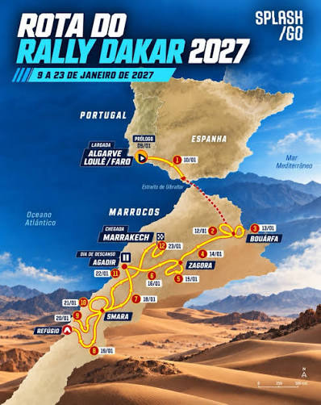

Creditos Splash Go
Com a atual situação no Oriente Médio, na Arábia Saudita, como foi com o WRC, que acabou cancelando sua última etapa, e o FIA Extreme H, que acabou cancelando a edição de 2026, o Dakar deverá ter outra rota com prólogo na Europa, provavelmente na região Ibérica, e o restante na África, em Marrocos.
Leia a matéria completa no Motorsport UOL